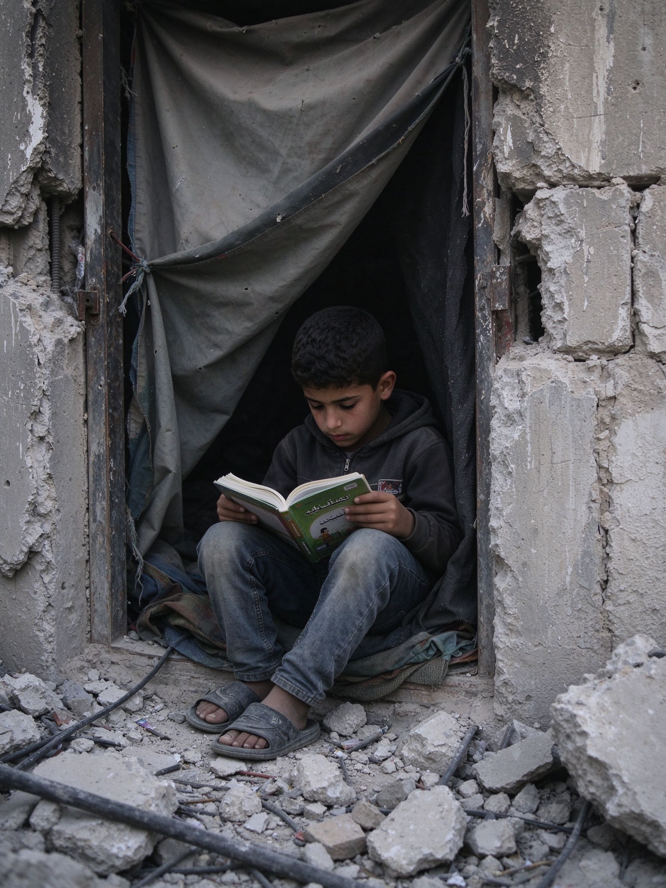
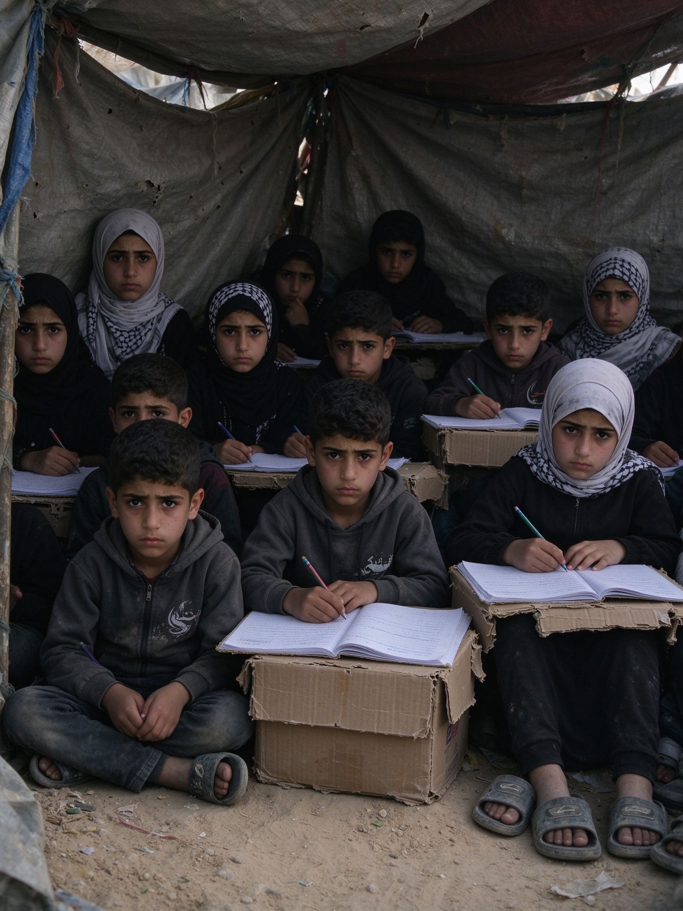
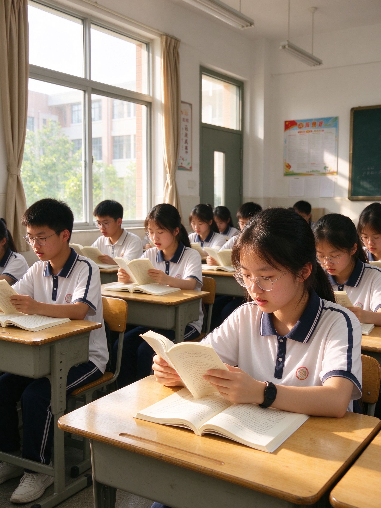

时事政治评论 · 必修一
—— 从巴以冲突看百年变局下的机遇与挑战
数据来源：联合国近东救济工程处（UNRWA）2026年9月局势报告
面对动荡，中国式现代化给出了自己的答案。中国式现代化是走和平发展道路的现代化，不走国强必霸的老路，坚持对话协商化解国际争端。中国始终站在和平一边，呼吁停火止战、劝和促谈，为地区和平贡献中国方案。
实现中华民族伟大复兴，外部环境复杂多变，必须统筹发展与安全，在动荡变局中把握历史机遇期。和平需要实力作为后盾，居安思危才能守护安宁。
作为新时代青年，我们更应看清世界、珍惜和平，把小我融入大我，以青春之力守护和平，以奋斗之姿助力民族复兴。



和平不是世界的默认设置，而是有人在守护
新时代是奋斗者的时代
战火启示我们：和平弥足珍贵，变局中机遇与挑战并存。
身处大有可为的历史机遇期，青年当居安思危、脚踏实地，
以青春之力守护和平，以奋斗之姿助力民族复兴。
巴以冲突持续近三年，七万余人丧生、百万人流离失所，三十万儿童在帐篷里求学。这场悲剧不是孤立的地区动荡，而是百年未有之大变局加速演进的缩影——和平与发展仍是时代主题，但局部冲突频发，机遇与挑战并存。
战争没有赢家，承受苦难最深的永远是普通平民。地缘矛盾叠加大国干涉，让冲突长期难以平息，也警示我们：世界并不太平，和平从来不是世界的默认设置。